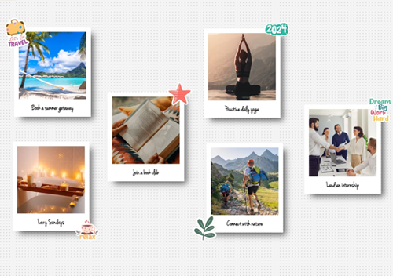

Dreamboard is our interpretation of a
vision board, which is is a
powerful tool used for visually representing your goals. A vision
board is a collage containing with an assortment of images and text
that represent things you're trying to accomplish.

Studies have shown that displaying your goals in this type of visual
format can actually help you achieve them. Creating a vision board can
help you clarify, concentrate or maintain focus on your aspirations.
It can be used as a regular reminder and motivator of where you want
to be.
Vision boards can be used for both short-term and long-term goals, and
creating one annually is a great method for establishing your New
Year's resolutions and encouraging you to stick to them.
It's also a fun arts-and-crafts project that allows you to see what
your goals would look like once you achieve them. Explore your
creative side, and have fun with it!